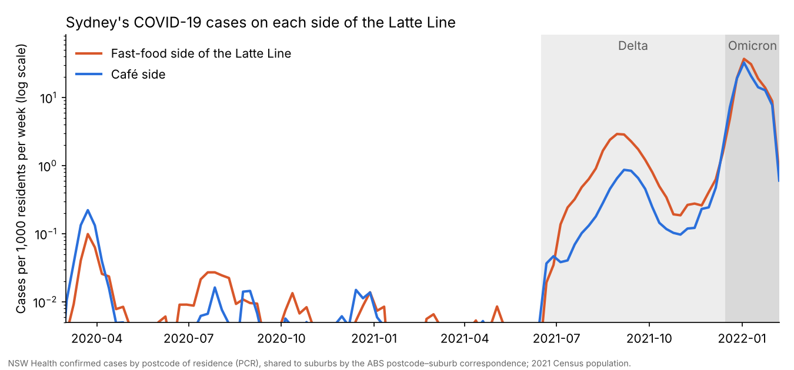
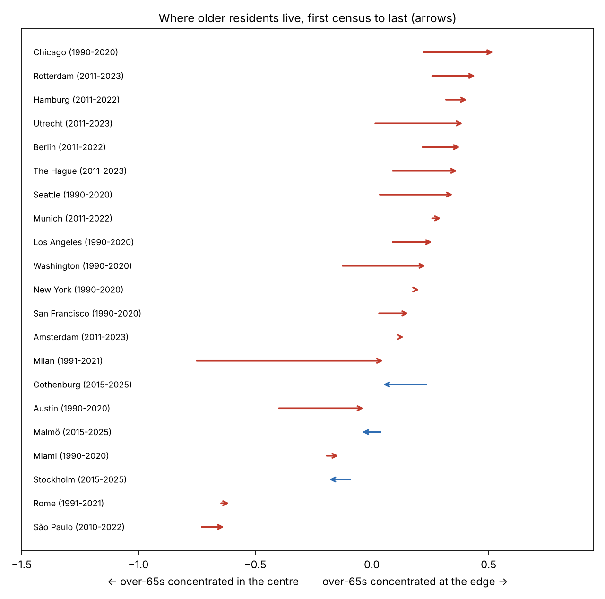
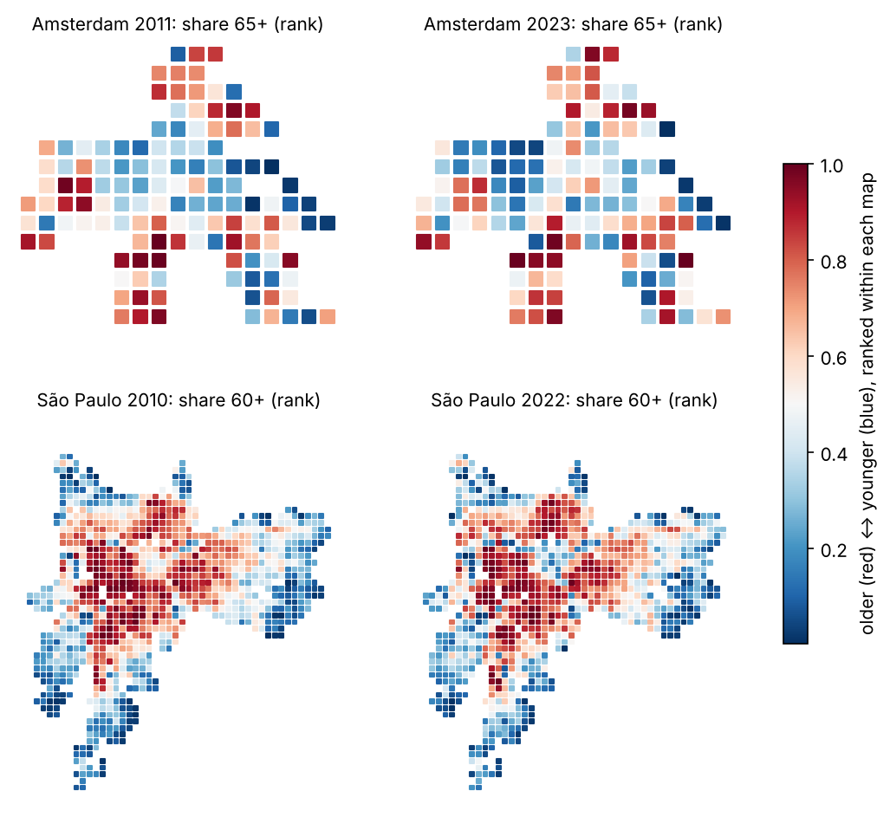
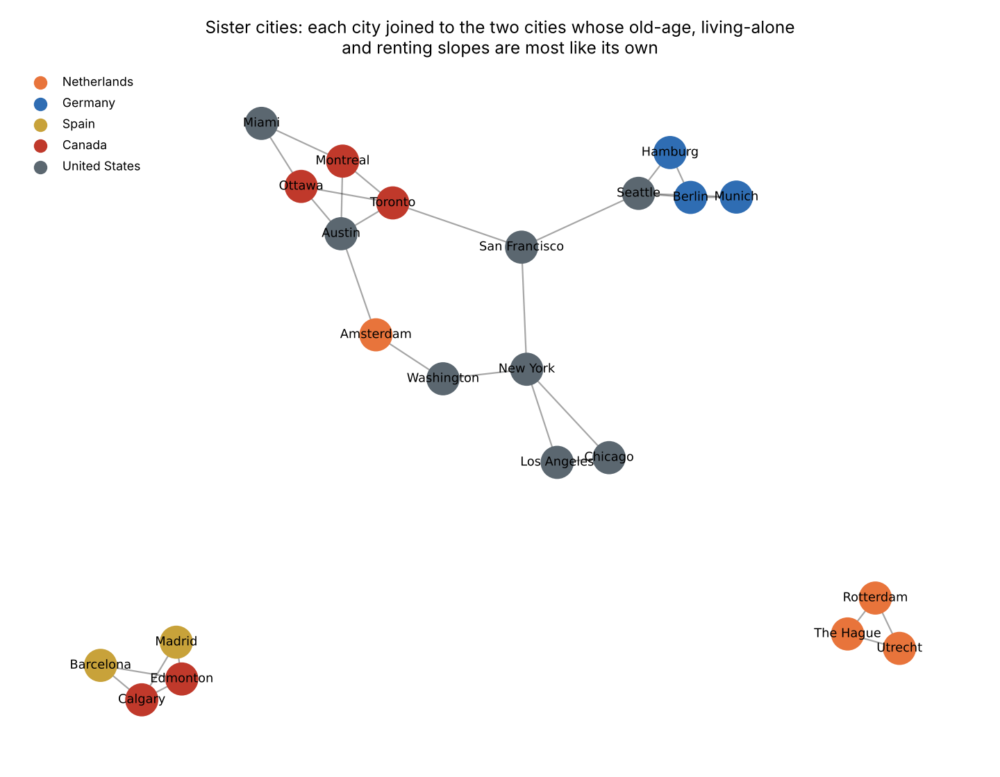

COVID-19 in Sydney, Europe, Canada, São Paulo and thirty years of change
We took the same tests to ten European cities and six Canadian ones, tried some food lines for fun, and followed 13 cities through their censuses since 1990 to see which lines moved. The predictions were written down before we looked at any of the data.
The headlines
The food lines
Names are jokes; what we test is where one kind of food place gives way to another. None of this says anything about the people who live there.
| Line | What it compares | Where | Verdict |
|---|---|---|---|
| Poutine Line | Poutine places among fast food | Gatineau vs Ottawa | Real, very strong |
| Latte Line | Cafés vs fast food | 10 European cities together | Real |
| Barcelona, Marseille, Rome, Ottawa | Real | ||
| Paris | Borderline | ||
| Amsterdam, Stockholm, Copenhagen and 6 more northern cities | No line | ||
| 5 Canadian cities together | No line | ||
| Croissant Line | Bakeries vs fast food | Paris | Real |
| Lyon, Marseille | No line | ||
| Bread Line | Independent bakers vs bakery chains | Hamburg | Real |
| Berlin | No line | ||
| Paella Line | Spanish restaurants vs fast food | Madrid, Barcelona | No line |
| Timmies Line | Tim Hortons vs independent cafés | Toronto | Possible, not confirmed |
| Calgary | No line | ||
| Starbucks Line | Independent cafés vs Starbucks | Paris, Madrid | No line: Starbucks just clusters in the centre |
Real = passed the strict check, allowing for how many cities we tried. Borderline or possible = passed in that city alone, but not once we allow for the other cities tested. Munich and most other cities had too few chain bakeries or Starbucks on OpenStreetMap to test.
COVID-19 in Sydney: where the Delta cases fell
In 2021, twelve Sydney councils were put under the strictest lockdown rules. Many people we know lived through it. We already showed that those councils lay mostly on the fast-food side of the Latte Line. Here we asked a second question: where did the cases themselves fall? We wrote the test down before downloading the data.

- During Delta (mid-June to mid-December 2021), cases were three times as common on the fast-food side: about 22 in every 1,000 residents (1 in 45), against about 7 in every 1,000 on the café side (1 in 137). Three in four of Sydney's Delta cases were on the fast-food side.
- This is not chance. We drew 999 made-up Sydneys with lines just as smooth as the real one. The real Latte Line matched where the cases were more closely than 997 of them.
- The jobs line matches even better. Where more people work in warehouses, delivery, driving and labouring (jobs that can't be done from home), Delta cases were higher still, on both sides of the Latte Line.
- The councils of concern had about 3.8 times the rest of Sydney's case rate. Highest were Cumberland (39 per 1,000) and Canterbury-Bankstown (35); lowest Burwood (8.5) and Georges River (10).
- It wasn't always this way. In 2020, cases were more common on the café side, brought in by returning travellers. When Omicron arrived in December 2021 and spread everywhere, the gap nearly closed.
What this can't tell us: these are confirmed cases by home postcode, so they mix how many people caught COVID-19 with how many were tested, and testing was heavier where the outbreak was. The rules followed the cases, so this can't say whether one caused the other, or whether any decision was fair. It shows where the cases fell, not why. Data: NSW Health confirmed cases by postcode; ABS postcode-to-suburb correspondence; 2021 Census.
Where older residents live, then and now
Each bar shows how much more the over-65s have moved towards the edge of the city since the first census we have. Longer bar = bigger move outward.
| City | Years | Shift of over-65s towards the edge |
|---|---|---|
| Milan | 1991–2021 | |
| Austin | 1990–2020 | |
| Washington | 1990–2020 | |
| Seattle | 1990–2020 | |
| Chicago | 1990–2020 | |
| Los Angeles | 1990–2020 | |
| Berlin | 2011–2022 | |
| San Francisco | 1990–2020 | |
| Hamburg | 2011–2022 | |
| Miami | 1990–2020 | |
| Munich | 2011–2022 | |
| Rome | 1991–2021 | |
| New York | 1990–2020 |
Every one of the 13 cities moved in the same direction. The change is clear enough to rule out chance in Milan, Washington, Los Angeles, Berlin and Hamburg on their own; German figures cover a shorter span (11 years). The likely reason: people who bought suburban homes decades ago have grown old in them, while younger people move into the centre.
Older residents are moving outward, in almost every city
We now have 21 cities with two or more censuses. In 18 of them people over 65 have moved from the centre towards the suburbs. The new Dutch cities and São Paulo follow the same pattern. The odds of 18 out of 21 by chance are about 1 in 700.
Sweden is the exception. In Stockholm, Gothenburg and Malmö older residents moved slightly towards the centre between 2015 and 2025. That's a shorter stretch of time, and we report it as it is.

Each arrow runs from the first census to the last. Arrows pointing right (red) mean older people moved outward; left (blue) means inward.

Red squares have more older residents, blue fewer. Between the two censuses, the red spreads from the core towards the edge.
Sister cities
We gave every city a "fingerprint": how age, living alone and renting change from its centre to its edge. Cities with similar fingerprints are sisters. Most cities' closest sister is in the same country, which is far more often than chance. Each country's housing and planning leaves its mark.
The surprises are the cross-border sisters: Amsterdam and Washington, Hamburg and Seattle, Madrid and Calgary, Barcelona and Edmonton, Austin and Toronto.

Each city is joined to the two cities most like it. Colours show the country.
Seoul and Busan
Korea's statistics office publishes its 2024 census on a 1 km grid, so we could add Seoul and Busan. We wrote the predictions down first.
- No real lines. Over-65s, people living alone and apartment living all change gradually, with no sharp border, in both cities.
- Living alone is a centre thing in Seoul. People living on their own cluster near the middle and thin out towards the edge, like almost everywhere else. In Busan the pattern is weak.
- Older people are spread evenly. Unlike most cities, neither Seoul nor Busan has a clear centre-or-edge pattern for over-65s.
- Seoul's sister is Ottawa, not Tokyo. We expected an East Asian sister. On the two measures every city has (where older people and people living alone live), Seoul looks most like Ottawa and Montreal, then Kobe. Busan's sister is Yokohama.
The Chippy Line: chippies vs cafés in England
A reader asked whether English cities split into chippy country and café country. We wrote the test down before counting a single chippy. The answer is no line: in London, Manchester, Birmingham, Liverpool and Brighton, where chippies sit next to cafés could easily be chance. They do lean the same way as the Latte Line, towards the fast-food side, in all five cities. Birmingham has the most chippies per café (about 2 for every 5 cafés), and London the fewest (about 1 for every 11).
Paris: boulangeries vs pâtisseries
Another reader's idea. The map data only separates boulangeries (3,265) from pâtisseries (441); croissants are sold in boulangeries, so they can't be counted on their own. There's no line between the two (could be chance), though pâtisseries lean towards the centre.
Coffee vs Churrasco, Snackbar vs Koffiebar, and the Fika Line
We wrote these down before looking at the shop maps, and predicted none would be a real line. None is.
- São Paulo, Coffee vs Churrasco: no line (could easily be chance). Cafés lean slightly towards the centre, churrascarias slightly outward.
- Amsterdam, Rotterdam, The Hague and Utrecht, Snackbar vs Koffiebar: no line in any of them. Dutch snack bars and coffee bars mix together.
- Stockholm, Gothenburg and Malmö, the Fika Line: no line. Fika is everywhere.
- Copenhagen and Aarhus: no café line either.
So the Latte Line is real in Sydney and in Barcelona, Marseille and Rome (less clearly Paris), but cafés and fast food don't sort apart in the Netherlands, Sweden or Denmark. One honest caveat for São Paulo: the volunteer-made map has fewer cafés there than the city really has.
New cities
Europe: Paris, Lyon, Marseille, Berlin, Munich, Hamburg, Madrid, Barcelona, Rome, Milan. Canada: Toronto, Ottawa, Montreal, Calgary, Edmonton, Gatineau. Phase 3: Amsterdam, Rotterdam, The Hague, Utrecht, Stockholm, Gothenburg, Malmö, Copenhagen, Aarhus and São Paulo. Korea: Seoul and Busan (2024). Over time: eight US cities (1990–2020), Rome and Milan (1991–2021), Berlin, Munich and Hamburg (2011–2022), the Dutch cities (2011–2023), the Swedish cities (2015–2025) and São Paulo (2010–2022).
Data: Eurostat 2021 census grid; CBS (Netherlands) and SCB (Sweden) grid statistics; IBGE (Brazil) census sectors; Statistics Korea SGIS 2024 grid; national censuses of Germany (2011, 2022), Spain (2021), Italy (1991–2021) and Canada (2021); IPUMS NHGIS US census tracts 1990–2020; OpenStreetMap. The full method, numbers and code are in the paper and on GitHub.
Please cite: Cheema, P. (2026). Is that line real? Calibrated tests for informal urban divides. https://pche123.github.io/Sydney-Split/